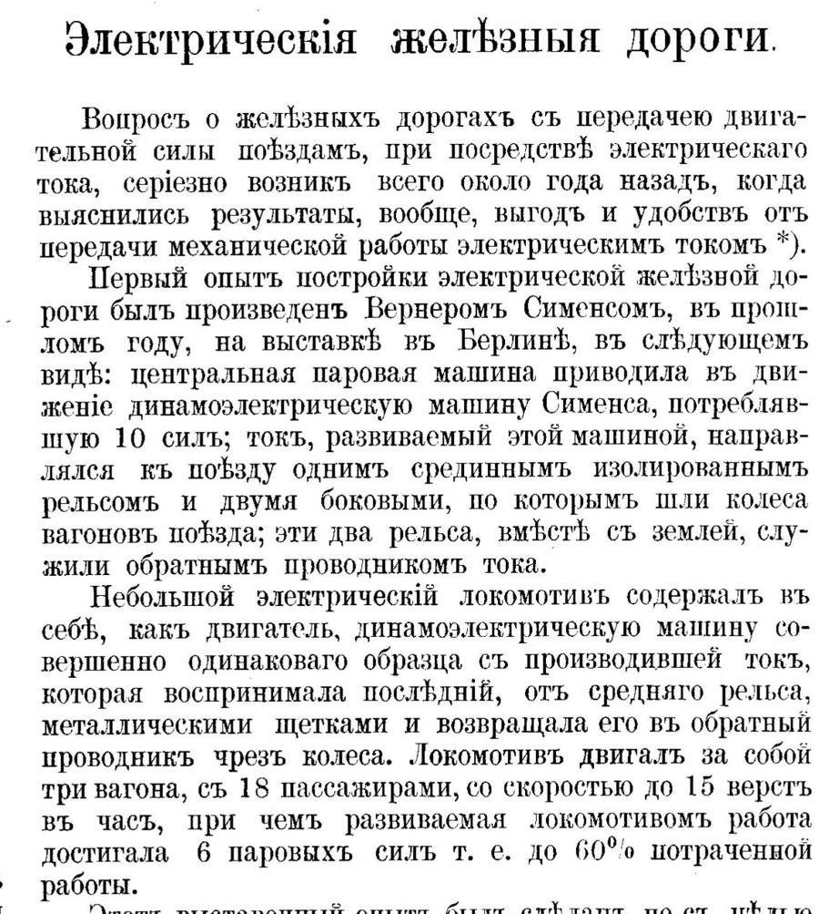
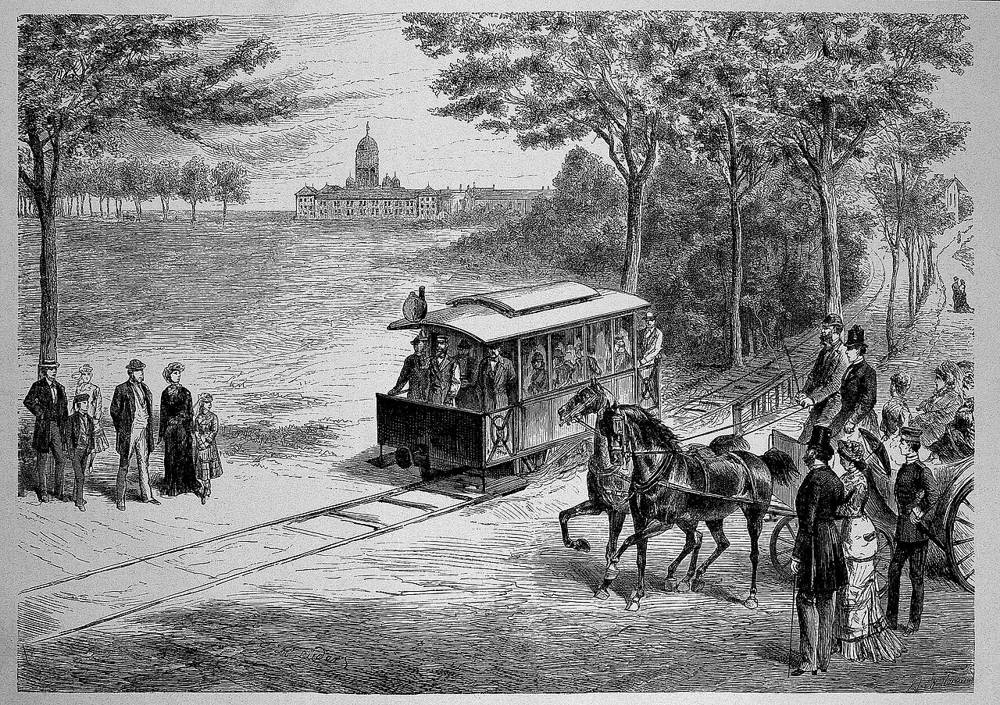

От опытов на Волковом поле — к вагону без лошадей на Песках
Читается подряд. Нажми на удар — откроется подробный разбор с источниками.
Фёдор Пироцкий родился 17 февраля 1845 года по старому стилю в селе Сенча Лохвицкого уезда Полтавской губернии, в семье военного врача.Узнать подробнееСвернуть
В восемнадцать лет он поступил в Константиновский кадетский корпус в Петербурге, через два года перешёл в юнкерский класс Михайловского артиллерийского училища и окончил его в 1866 году. Служил в Киеве, в Печерской крепостной артиллерии.
Источники: Президентская библиотека, «Фёдор Аполлонович Пироцкий (1845–1898)», проект «Великая Россия»; Большая советская энциклопедия, 3-е изд., статья «Пироцкий Фёдор Аполлонович».
В 1871 году, окончив Михайловскую артиллерийскую академию, он поступил в Главное артиллерийское управление в Петербурге.Узнать подробнееСвернуть
Его назначили ревизором в отдел технических отчётов и смет. По службе он знакомился с работами на Главном артиллерийском полигоне, где электричество пробовали применять в военном деле.
Источники: Президентская библиотека, «Фёдор Аполлонович Пироцкий (1845–1898)»; СПб ГУП «Горэлектротранс», «К 175-летию Фёдора Пироцкого, изобретателя трамвая и героя стрит-арта» (2020).
В 1874 году на Волковом поле под Петербургом Пироцкий стал передавать ток от одной динамо-машины к другой, стоявшей поодаль, — и та работала как двигатель.Узнать подробнееСвернуть
Он хотел получать работу там, где она дешева, — у воды или у топлива — и по проводам передавать её к фабрикам. Виртуальный музей истории энергетики Северо-Запада приводит его слова: «У нас в России передача работы может иметь огромное применение, в чем нетрудно убедиться, взглянув на карту».
Источники: Большая советская энциклопедия, 3-е изд., «Пироцкий Фёдор Аполлонович»; Виртуальный музей истории энергетики Северо-Запада, «Пироцкий Федор Аполлонович».
Летом 1876 года на заброшенной ветке железной дороги у Сестрорецка двигатель Пироцкого работал в километре от источника тока. Проводами служили сами рельсы: один — прямым, другой — обратным.Узнать подробнееСвернуть
Отсюда он вывел: электричество, переданное на расстояние, может вращать колёса экипажа, который идёт по рельсам. По данным «Горэлектротранса», Пироцкий подал заявку на привилегию и изложил выводы в статье.
Источники: Виртуальный музей истории энергетики Северо-Запада, «Пироцкий Федор Аполлонович»; СПб ГУП «Горэлектротранс» (2020); Президентская библиотека, «Фёдор Аполлонович Пироцкий (1845–1898)».
Весной 1880 года в электротехническом отделе Русского технического общества шли прения по сообщению Пироцкого «о передаче силы, при помощи электрического тока, на всякие расстояния».Узнать подробнееСвернуть
Отчёт отдела напечатан в первом номере нового журнала «Электричество». Председатель прочёл на заседании письма г. Хвольсона «по поводу прений, возникших по сообщению г. Пироцкого». Там же сказано, что между 24 февраля и 1 мая 1880 года прошли три публичные беседы. Вторая была посвящена сообщению Пироцкого «о передаче механической работы, при помощи электрического тока, на всякие расстояния». Третья — сообщению В. Н. Чиколева о превосходстве железных дорог с электрической передачей силы над паровозными.
Источник: «Краткий отчёт о действиях VI отдела Императорского Русского технического общества», «Электричество», 1880, № 1, с. 2 (скан — Вологодская областная универсальная научная библиотека, копия в Internet Archive).
В том же номере журнал рассказал о сопернике: в 1879 году Вернер Сименс показал на выставке в Берлине электрическую железную дорогу — небольшой локомотив вёз три вагона с 18 пассажирами.Узнать подробнееСвернуть
«Первый опыт постройки электрической железной дороги был произведен Вернером Сименсом, в прошлом году, на выставке в Берлине… Локомотив двигал за собой три вагона, с 18 пассажирами, со скоростью до 15 верст в час».
Ток шёл к локомотиву по среднему изолированному рельсу, а возвращался по двум боковым, по которым катились колёса. Журнал подчёркивал: выставочный опыт должен был лишь познакомить публику с самой возможностью электрического движения по рельсам.

«Электричество», 1880, № 1, с. 12: начало статьи «Электрические железные дороги». Скан Вологодской областной универсальной научной библиотеки, Internet Archive; общественное достояние. Источник: «Электрические железные дороги», «Электричество», 1880, № 1, с. 12–13.
Летом 1880 года Пироцкий на собственные деньги переделал двухэтажный вагон конки: под кузовом поставил электродвигатель, а вращение на оси передал через зубчатые колёса.Узнать подробнееСвернуть
Вагон был тяжёлый, весом 6,5 тонны, с империалом — открытыми местами на крыше. Опыты шли в Рождественском парке конно-железной дороги в Дегтярном переулке: по данным «Горэлектротранса», Пироцкий построил там электростанцию и приспособил 85 метров рельсового пути. По тем же данным, у вагона Пироцкого был номер 114 — его теперь носит музейная реплика конки.
Источники: Президентская библиотека, «Фёдор Аполлонович Пироцкий (1845–1898)»; СПб ГУП «Горэлектротранс», «Электрическое чудо: 143 года назад в Петербурге продемонстрировали первый трамвай» (2023).
22 августа 1880 года, в полдень, на углу Болотной улицы и Дегтярного переулка Пироцкий двинул вагон без лошадей: ток шёл к двигателю по рельсам, по которым катились колёса.Узнать подробнееСвернуть
В печати тогда сообщили:
«…в Санкт-Петербурге, на Песках, на углу Болотной улицы и Дегтярного переулка, г. Пироцким первый раз в России двинут вагон электрической силою, идущей по рельсам, по которым катятся колёса вагона».
Так это сообщение цитируют Президентская библиотека и «Горэлектротранс». Журнал «Мир метро» называет его источником пятый номер журнала «Электричество» за 1880 год. Скан этого номера мы в открытом доступе пока не нашли. Болотная улица теперь называется улицей Моисеенко.
Источники: Президентская библиотека, «Фёдор Аполлонович Пироцкий (1845–1898)»; СПб ГУП «Горэлектротранс» (2020, 2023); Виртуальный музей истории энергетики Северо-Запада; А. Спарбер, «Артиллерист-изобретатель», «Мир метро», 2024.
Вагон брал до 40 пассажиров. По отчётам, опыты продолжались и в сентябре 1880 года — 1, 14, 15 и 16 сентября.Узнать подробнееСвернуть
Сорок пассажиров называют и «Горэлектротранс», и Музей истории энергетики. Скорость в этих источниках расходится, поэтому мы её не приводим.
Источники: СПб ГУП «Горэлектротранс» (2020); Виртуальный музей истории энергетики Северо-Запада.
Хозяева конно-железных дорог доказывали «опасность, ненужность и бесполезность» электрического вагона. Опыты прекратились, а электрический трамвай в Петербурге пошёл только в 1907 году.Узнать подробнееСвернуть
Слова в кавычках — пересказ «Горэлектротранса». Переделка конной дороги в электрическую требовала больших денег, а выгоды для себя владельцы конок не видели. Город смог пустить трамвай лишь после того, как выкупил права у владельцев конно-железных дорог. Первым в России электрический трамвай получил Киев, в 1892 году.
Источники: СПб ГУП «Горэлектротранс» (2020, 2023).
16 мая 1881 года фирма «Сименс и Гальске» открыла в Лихтерфельде под Берлином электрическую трамвайную линию для постоянного движения. В том же году Пироцкий показал модель своей дороги на Международной электротехнической выставке в Париже.Узнать подробнееСвернуть
Линию проложили по готовой насыпи длиной около 2,4 километра — бывшей временной дороге, по которой возили материалы для Главного кадетского корпуса.

«Электрическая железная дорога у Лихтерфельде». Рисунок Г. Людерса с натуры, журнал «Die Gartenlaube», 1881. Викисклад, общественное достояние. Источники: Deutschlandmuseum, «1881-05-16: The first electric trams»; Президентская библиотека, «Фёдор Аполлонович Пироцкий (1845–1898)».
Пироцкий умер 28 февраля 1898 года по старому стилю, в Алёшках, без средств. В 2019 году сквер у Дегтярного переулка, где он пустил свой вагон, назвали его именем.Узнать подробнееСвернуть
В 1888 году он ушёл в отставку, чтобы оформить небольшое имение, которое он должен был унаследовать, и не дослужил нескольких месяцев до полной пенсии. Из-за волокиты и ошибок в документах наследства он так и не получил. Последние годы Пироцкий жил в военном пансионате в Алёшках.
Источники: Президентская библиотека, «Фёдор Аполлонович Пироцкий (1845–1898)»; Большая советская энциклопедия, 3-е изд.; СПб ГУП «Горэлектротранс» (2020).